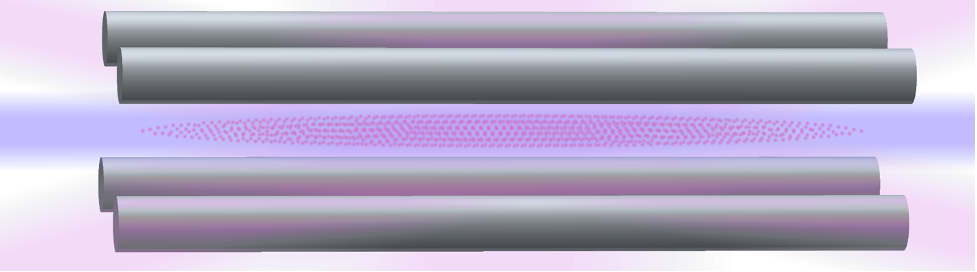

Thorium nuclear clocks and precision nuclear physics

Typical nuclear transitions have energies of 10 to 1000 keV which are inaccessible to present-day narrow-linewidth lasers. However, there is one known laser-accessible nuclear isomer transition, between the 5+/2 [633] ground and 3+/2 [631] metastable excited states of the thorium-229 nucleus. The wavelength is in the experimentally challenging vacuum ultraviolet
(VUV) range at 148.71 ± 0.42 nm [1].
In collaboration with the Hudson group, we aim to perform the first ever laser spectroscopy of a nuclear transition and to build a nuclear clock based on the thorium-229 isomer transition [2]. These experiments are based on one to tens of 229Th3+ ions trapped in a cryogenic ion trap and sympathetically laser cooled by co-trapped 88Sr+ qubit ions. We will develop a VUV frequency comb based on high harmonic generation (HHG) [3] or highly-cascaded harmonic generation (HCHG) [4] to drive the nuclear transition. The nuclear state of the thorium ions will be read out directly using state-dependent fluorescence [5].
The anomalously low energy of the thorium nuclear isomer transition results from a near-cancellation of roughly 100 keV of electromagnetic energy with roughly 100 keV of strong force energy. This ≈ 10-5 fractional energy cancellation results in a factor of ≈105 enhancement of the sensitivity to beyond Standard Model effects, relative to the atomic transitions used for these searches today. Thus, thorium nuclear clocks are an ideal platform for searches for ultralight scalar dark matter [6] and temporal variations of the strengths of the strong force and the electromagnetic force caused by beyond Standard Model (BSM) particles and fields [7].
- S. Kraemer et al., "Observation of the radiative decay of the 229Th nuclear clock isomer", arXiv:2209.10276 (2022)
- C. J. Campbell, A. G. Radnaev, A. Kuzmich, V. A. Dzuba, V. V. Flambaum, and A. Derevianko, "Single-Ion Nuclear Clock for Metrology at the 19th Decimal Place", Phys. Rev. Lett. 108, 120802 (2012)
- C. Zhang, P. Li, J. Jiang, L. von der Wense, J. Doyle, M.E. Fermann, and J. Ye, "Tunable VUV frequency comb for 229mTh nuclear spectroscopy", Optics Lett. 47, 5591 (2022)
- D. E. Couch, D. D. Hickstein, D. G. Winters, S. J. Backus, M. S. Kirchner, S. R. Domingue, J. J. Ramirez, C. G. Durfee, M. M. Murnane, and H. C. Kapteyn, "Ultrafast 1 MHz vacuum-ultraviolet source via highly cascaded harmonic generation in negative-curvature hollow-core fibers", Optica 7, 832 (2020)
- C. J. Campbell, A. G. Radnaev, and A. Kuzmich, "Wigner Crystals of 229Th for Optical Excitation of the Nuclear Isomer", Phys. Rev. Lett. 106, 223001 (2011)
- A. Banerjee, H. Kim, O. Matsedonskyi, G. Perez, and M. S. Safronova, "Probing the relaxed relaxion at the luminosity and precision frontiers", J. High Energy Physics 153, 10.1007/JHEP07(2020)153 (2020)
- M. S. Safronova, D. Budker, D. DeMille, D. F. Jackson Kimball, A. Derevianko, and C. W. Clark, "Search for new physics with atoms and molecules", Rev. Mod. Phys. 90, 025008 (2018)
Quantum control and the search for new physics with polyatomic molecules
The techniques of laser cooling, trapping, and quantum control of atoms and atomic ions have revolutionized our understanding of quantum mechanics and are essential to the quantum simulators and computers at the heart of the present second quantum revolution. Molecules offer richer physics that can be used for quantum information processing [1] and the search for new physics [2], but are much more difficult to control due to their numerous degrees of freedom. We aim to extend the capabilities of modern quantum control to polyatomic molecules and use them to search for violations of fundamental symmetries that would indicate physics beyond the Standard Model (BSM).
We will construct an apparatus based on the PI’s previous experiments with diatomic molecules at NIST [3-5], in which a single molecular ion is co-trapped with a single qubit ion. We will develop new techniques for loading molecular ions into the trap with internal temperatures well below 1 K. At these temperatures, tens to thousands of molecular quantum states will be populated, and we will use projective quantum-logic spectroscopy measurements to prepare the molecule in a single, pure quantum state as the starting point for our experiments.
Our long-term goals are to control and perform spectroscopy of polyatomic molecules such as
- Ammonia-like molecules with inversion transitions that are highly sensitive to the value of the electron-to-proton mass ratio [6] and can be used to search for temporal variations predicted by unification theories,
- Opposite handedness chiral molecules to study parity symmetry violation in the weak force, and
- • Symmetric top molecules with rotational transitions between near-degenerate opposite parity K-doublets that are highly sensitive to charge-parity symmetry violation in the strong force [7], which has not been observed but is necessary to explain the abundance of matter over antimatter in the universe.
- W. C. Campbell and E. R. Hudson, "Dipole-phonon quantum logic with trapped polar molecular ions", Phys. Rev. Lett. 125, 120501 (2020)
- M. S. Safronova, D. Budker, D. DeMille, D. F. Jackson Kimball, A. Derevianko, and C. W. Clark, "Search for new physics with atoms and molecules", Rev. Mod. Phys. 90, 025008 (2018)
- C. W. Chou, C. Kurz, D. B. Hume, P. N. Plessow, D. R. Leibrandt, and D. Leibfried, "Preparation and coherent manipulation of pure quantum states of a single molecular ion", Nature 545, 203 (2017)
- C. W. Chou, A. L. Collopy, C. Kurz, Y. Lin, M. E. Harding, P. N. Plessow, T. Fortier, S. Diddams,D. Leibfried, and D. R. Leibrandt, "Frequency-comb spectroscopy on pure quantum states of a single molecular ion", Science 367, 1458 (2020)
- Y. Lin, D. R. Leibrandt, D. Leibfried, and C. W. Chou, "Quantum entanglement between an atom and a molecule", Nature 581, 273 (2020)
- M. G. Kozlov and S. A. Levshakov, "Sensitivity of the H3O+ inversion-rotational spectrum to changes in the electron-to proton mass ratio", Astrophys. J. 726, 65 (2011)
- P. Yu and N. R. Hutzler, "Probing fundamental symmetries of deformed nuclei in symmetric top molecules", Phys. Rev. Lett. 123, 023003 (2021)
Space optical clocks for technology and fundamental physics applications
Laboratory optical atomic clocks [1] have reached fractional precision and accuracy at the 10-18 level [2]. This extreme precision is unrivaled anywhere in science or technology and can be used for quantum sensing tasks such as the search for dark matter [3] or deviations from the predictions of general relativity [4]. However, many promising scientific and technological applications require clocks that can be operated outside the pristine laboratory environment and without continuous human supervision.
We aim to develop optical atomic clocks that are compatible with operation on satellites and in terrestrial field environments. This project sits at the intersection of quantum science and engineering, and requires the development of vibration-insensitive lasers [5] and robust ion traps with integrated photonics [6]. Ultimately, we hope to launch an optical clock on a high-Earth orbit for space-based tests of general relativity [7], dark matter searches, and very-long-baseline interferometry [8].
- A. D. Ludlow, M. M. Boyd, J. Ye, E. Peik, and P. O. Schmidt, "Optical atomic clocks", Rev. Mod. Phys. 87, 637 (2015)
- S. M. Brewer, J.-S. Chen, A. M. Hankin, E. R. Clements, C. W. Chou, D. J. Wineland, D. B. Hume, and D. R. Leibrandt, "An 27Al+ quantum-logic clock with systematic uncertainty below 10-18", Phys. Rev. Lett. 123, 033201 (2019)
- The BACON collaboration, "Frequency ratio measurements with 18-digit accuracy using a network of optical clocks", Nature 591, 564 (2021)
- M. Takamoto, I. Ushijima, N. Ohmae, T. Yahagi, K. Kokado, H. Shinkai, and H. Katori, "Test of general relativity by a pair of transportable optical lattice clocks", Nature Photonics 14, 411 (2020)
- D. R. Leibrandt, J. C. Bergquist, and T. Rosenband, "Cavity-stabilized laser with acceleration sensitivity below 10-12 g-1", Phys. Rev. A 87, 023829 (2013)
- M. Ivory, W. J. Setzer, N. Karl, H. McGuinness, C. DeRose, M. Blain, D. Stick, M. Gehl, and L. P. Parazzoli, "Integrated Optical Addressing of a Trapped Ytterbium Ion", Phys. Rev. X 11, 041033 (2021)
- A. Derevianko, K. Gibble, L. Hollberg, N. R. Newbury, C. Oates, M. S. Safronova, L. C. Sinclair, and N. Yu, "Fundamental physics with a state-of-the-art optical clock in space", Quantum Sci. Technol. 7, 044002 (2022)
- The Event Horizon Telescope Collaboration, "First Sagittarius A* Event Horizon Telescope Results. I. The Shadow of the Supermassive Black Hole in the Center of the Milky Way", Astrophysical J. Lett. 930, L12 (2022)
Scalable quantum sensing with trapped ions in the NISQ era

We are interested in using noisy intermediate-scale quantum (NISQ) devices based on three-dimensional ion crystals [1] or quantum charge-coupled device (QCCD) ion trap arrays [2] for quantum sensing and precision measurements, with quantum-enhanced sensitivity!
- D. R. Leibrandt, S. G. Porsev, C. Cheung, and M. S. Safronova, "Prospects of a thousand-ion Sn2+ Coulomb-crystal clock with sub-10-19 inaccuracy", arXiv:2205.15484 (2022)
- M. Ivory, W. J. Setzer, N. Karl, H. McGuinness, C. DeRose, M. Blain, D. Stick, M. Gehl, and L. P. Parazzoli, "Integrated Optical Addressing of a Trapped Ytterbium Ion", Phys. Rev. X 11, 041033 (2021)